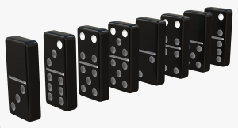

PARC: Alignment
Ronerto Bernal WebsiteAlignment: Everything on a page needs to be visually connected to something else, nothing should be out of place or different from all other design elements. The alignment makes everything look organized, and in harmony, this article visualizes the alignment as a behavioral proposal staff. Below is a summarized list of the articles Roberto Bernal
- Alignment is important for the design of a page, for the domino effect and to be successful
- Alignment is a way of ordering the main thing and expect good results
- The domino effect comes from the alignment of actions
- The domino alignment is an example of our own alignment
- The domino effect brings a great implication, thanks to the alignment with a small action big things can collapse
- Alignment is essential for success, as success is sequential.
- Producing a domino effect seems as simple as aligning actions and then put the first token in motion and that's it, In real life every day you must align your priorities, take action again to make the other pieces fall. On Web pages, alignment has a great visual impact.
- The small actions alignment approach works. Simply because extraordinary success is sequential, not simultaneous. Furthermore, what begins linearly ends up becoming exponential.
- You must also persevere in achieving good alignment. We must keep in mind:"If you learn from mistakes, so do achievements".
- There are two things you can pursue in life; The first is to take the action steps that you established aligned with the objectives you have set for yourself. The second is to enjoy while you take these steps and celebrate them.
PARC: Contrast
imprentaonline24In graphic design, contrast is generated when there is a notable difference between two elementsDifference in lighting intensity in the black and white range or in the color range of an image.
Contrast: It has to do with sensory stimuli that allow elements or areas in a composition to be highlighted through the opposition or difference between them, that is, in a graphic design contrast is generated when there is a notable difference between two elements. Contrast is one of the most fun principles in graphic design and even the most radical. It is about taking risks and making the main element of the graphic product around which all the others revolve, stand out from the rest.
Ideas on how to generate contrast in a composition:
- Use a large font with a much smaller one.
- Use thick line strokes with other much thinner strokes.
- Use the wide spectrum of colors and mix, for example, a cold color with a warm one. You can also play with saturations or intensities.
- Play with the space between lines. Paragraphs with longer line spacing and blocks of text with shorter line spacing will create an immediate contrast.
- The use of completely different textures will also achieve this effect.
PARC: Repetition
Sergio Vergara WebsiteRepetition makes us connected, when designing a page, repetition is a very important tool since we want the user to feel comfortable and be able to use simple, repeated tools and become familiar with the design, which makes it easier for the user to navigate our website.

Repetition is the reuse of the same or similar elements throughout the design. Now this should not be confused with repeating visual elements like a pattern. Visual elements as a pattern have more to do with visual style. Good design practice seeks to repeat some aspects of some element throughout a design. You should use repetition to create a sense of unity and consistency throughout your design. Repetition creates a particular style, cohesion, emphasis, and hierarchical structure, and strengthens your design. The goal of any design is to make some impression, preferably a lasting one. If your design achieves this objective, you will be fulfilling the communication purpose, with a particular message that persists and can become familiar.